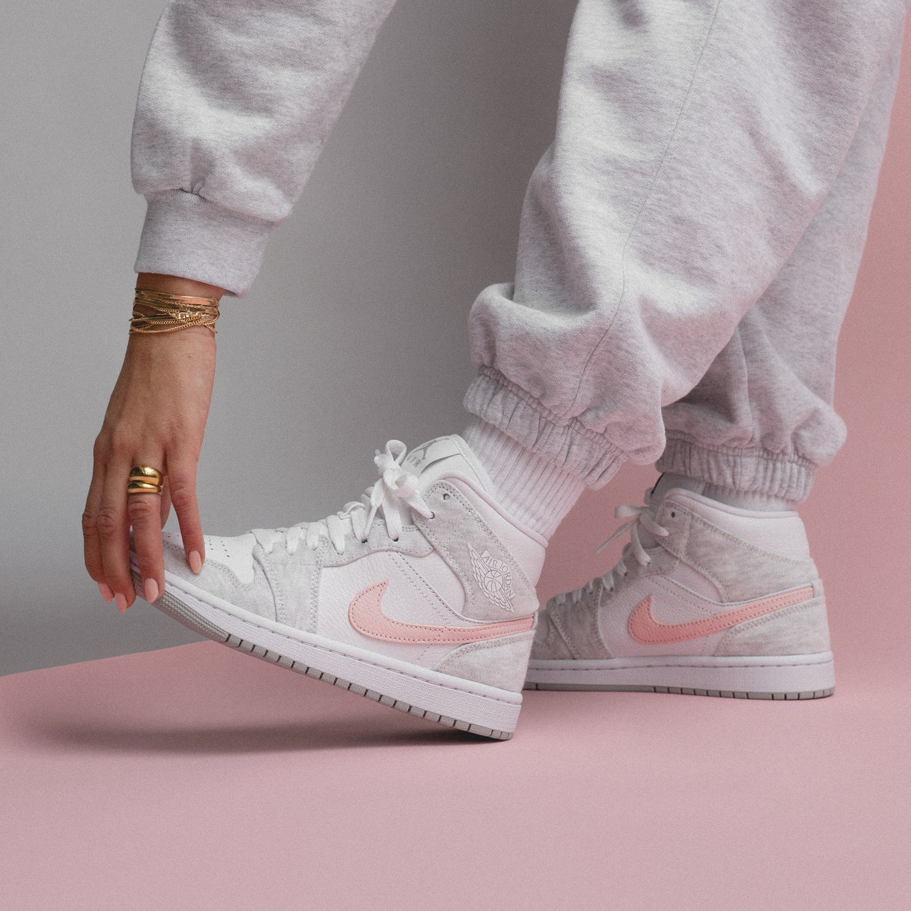

Au 21ème siècle, nous sommes dans une ère de numérique en constante expansion. De plus d'informations sont traquées et récupérées par différents capteurs, situés dans notre téléphone ou dans les montres connectées. Mais n'avez-vous pas envie de rendre ce tracking plus efficace et plus localisé ? Ne voulez-vous pas être certain de son efficacité ? Avec SmartSneak, vous pouvez équiper votre paire de chaussures avec tous les équipements électroniques que vous voulez ! Température corporelle, podomètre, différents mode de sport ou de marche ou même des lacets adaptifs et bien plus, le tout sur une batterie qui se recharge lorsque vous marchez ! Vous pouvez consulter les différentes options sur notre page Produits.
Les deux PDG de SmartSneak, Doryan et Olivier ont développé ce concept après un match de basket intense, où ils se heurtèrent à des problèmes du quotidien tels que les courbatures, un rythme cardiaque élevé ou transpiration... Animés d'une volonté de prendre connaissance et de traquer leurs informations corporelles mais gênés par leurs montres connectées et leurs téléphones portables, ils ne pouvaient pas contrôler ces informations efficacement. Nos deux PDG ont alors directement pensé à intégrer tous les capteurs nécessaires dans leurs chaussures, afin de garder un oeil sur leurs informations tout en pouvant disputer un match sans être encombrés.
Pour commencer, nous avons répertorié tous les capteurs utiles pour nos clients afin de dresser la liste idéale pour vous. Par la suite, nous nous sommes penché sur l'application permettant de traduire les signaux analogiques récupérés par nos appareils. Via cette application, différents modes de sport sont disponibles mais une question se pose encore : lorsque vous n'avez pas la possibilité d'y accéder, il faut qu'il soit possible de changer de mode directement via une interface discrète présente sur la chaussure. Un mode polyvalent est donc disponible 24h/24 lorsque vous ne pouvez pas customiser précisément via l'application mobile. Après plusieurs tests de miniaturisation des capteurs pour les intégrer dans la chaussure, nous sommes enfin prêts à rentrer dans la phase de commercialisation !
Révolutionner votre quotidien avec une toute nouvelle technologie qui pourra faciliter votre vie et vous accompagner pendant vos efforts. Vous proposer une technologie durable en partageant des mises à jour régulières.